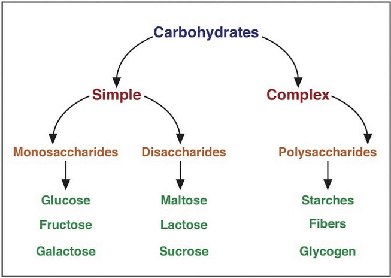
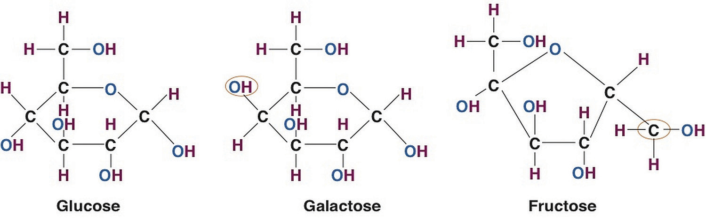
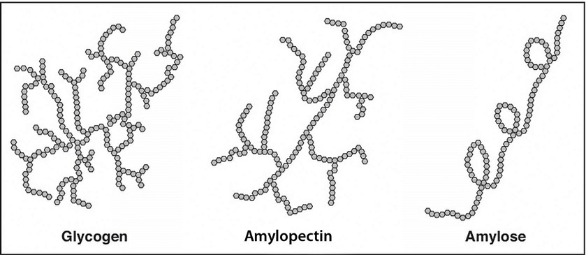

Carbohydrates are the perfect nutrient to meet your body’s nutritional needs. They nourish your brain and nervous system, provide energy to all of your cells (and within proper caloric limits), and help keep your body fit and lean. Specifically, digestible carbohydrates provide bulk in foods, vitamins, and minerals, while indigestible carbohydrates provide a good amount of fiber with a host of other health benefits.
Plants synthesize the fast-releasing carbohydrate, glucose, from carbon dioxide in the air and water, and by harnessing the sun’s energy. Recall from Chapter 3 "Nutrition and the Human Body" that plants convert the energy in sunlight to chemical energy in the molecule, glucose. Plants use glucose to make other larger, more slow-releasing carbohydrates. When we eat plants we harvest the energy of glucose to support life’s processes.
Figure 4.1 Carbohydrate Classification Scheme
Carbohydrates are broken down into the subgroups “fast-releasing” and “slow-releasing” carbohydrates. These subgroups are further categorized into mono-, di-, and polysaccharides.
Carbohydrates are a group of organic compounds containing a ratio of one carbon atom to two hydrogen atoms to one oxygen atom. Basically, they are hydrated carbons. The word “carbo” means carbon and “hydrate” means water. GlucoseThe most abundant carbohydrate in the human body. It has six carbon atoms, twelve hydrogen atoms, and six oxygen atoms., the most abundant carbohydrate in the human body, has six carbon atoms, twelve hydrogen atoms, and six oxygen atoms. The chemical formula for glucose is written as C6H12O6. Synonymous with the term carbohydrate is the Greek word “saccharide,” which means sugar. The simplest unit of a carbohydrate is a monosaccharideThe simplest unit of a carbohydrate.. Carbohydrates are broadly classified into two subgroups, “fast-releasing” and “slow-releasing.” Fast-releasing carbohydrates are further grouped into the monosaccharides and dissacharides. Slow-releasing carbohydrates are long chains of monosaccharides. (Figure 4.1 "Carbohydrate Classification Scheme").
Fast-releasing carbohydrates are also known more simply as “sugars.” Fast-releasing carbohydrates are grouped as either monosaccharides or dissacharides. Monosaccharides include glucose, fructose, and galactose, and the dissacharides include, lactose, maltose, and sucrose.
For all organisms from bacteria to plants to animals, glucose is the preferred fuel source. The brain is completely dependent on glucose as its energy source (except during extreme starvation conditions). The monosaccharide galactose differs from glucose only in that a hydroxyl (−OH) group faces in a different direction on the number four carbon (Figure 4.2 "Structures of the Three Most Common Monosaccharides: Glucose, Galactose, and Fructose"). This small structural alteration causes galactose to be less stable than glucose. As a result, the liver rapidly converts it to glucose. Most absorbed galactose is utilized for energy production in cells after its conversion to glucose. (Galactose is one of two simple sugars that are bound together to make up the sugar found in milk. It is later freed during the digestion process.)
Fructose also has the same chemical formula as glucose but differs in its chemical structure, as the ring structure contains only five carbons and not six (Figure 4.2 "Structures of the Three Most Common Monosaccharides: Glucose, Galactose, and Fructose"). Fructose, in contrast to glucose, is not an energy source for other cells in the body. Mostly found in fruits, honey, and sugarcane, fructose is one of the most common monosaccharides in nature. It is also found in soft drinks, cereals, and other products sweetened with high fructose corn syrup.
Figure 4.2 Structures of the Three Most Common Monosaccharides: Glucose, Galactose, and Fructose
Red circles indicate the structural differences between the three.
Less common monosaccharides are the pentoses, which have only five carbons and not six. The pentoses are abundant in the nucleic acids RNA and DNA, and also as components of fiber.
Lastly, there are the sugar alcohols, which are industrially synthesized derivatives of monosaccharides. Some examples of sugar alcohols are sorbitol, xylitol, and glycerol. (Xylitol is similar in sweetness as table sugar.) Sugar alcohols are often used in place of table sugar to sweeten foods as they are incompletely digested and absorbed, and therefore less caloric. The bacteria in your mouth opposes them, hence sugar alcohols do not cause tooth decay. Interestingly, the sensation of “coolness” that occurs when chewing gum that contains sugar alcohols comes from them dissolving in the mouth, a chemical reaction that requires heat from the inside of the mouth.
DisaccharidesTwo monosaccharides joined together. are composed of pairs of two monosaccharides linked together. Disaccharides include sucrose, lactose, and maltose. All of the disaccharides contain at least one glucose molecule.
Sucrose, which contains both glucose and fructose molecules, is otherwise known as table sugar. Sucrose is also found in many fruits and vegetables, and at high concentrations in sugar beets and sugar cane, which are used to make table sugar. Lactose, which is commonly known as milk sugar, is composed of one glucose unit and one galactose unit. Lactose is prevalent in dairy products such as milk, yogurt, and cheese. Maltose consists of two glucose molecules bonded together. It is a common breakdown product of plant starches and is rarely found in foods as a disaccharide.
Slow-releasing carbohydrates are polysaccharidesA long chain of monosaccharides that may be branched or not branched., long chains of monosaccharides that may be branched or not branched. There are two main groups of polysaccharides: starches and fibers.
Starch molecules are found in abundance in grains, legumes, and root vegetables, such as potatoes. Amylose, a plant starch, is a linear chain containing hundreds of glucose units. Amylopectin, another plant starch, is a branched chain containing thousands of glucose units. These large starch molecules form crystals and are the energy-storing molecules of plants. These two starch molecules (amylose and amylopectine) are contained together in foods, but the smaller one, amylose, is more abundant. Eating raw foods containing starches provides very little energy as the digestive system has a hard time breaking them down. Cooking breaks down the crystal structure of starches, making them much easier to break down in the human body. The starches that remain intact throughout digestion are called resistant starches. Bacteria in the gut can break some of these down and may benefit gastrointestinal health. Isolated and modified starches are used widely in the food industry and during cooking as food thickeners.
Figure 4.3 Structures of the Plant Starches and Glycogen
Humans and animals store glucose energy from starches in the form of the very large molecule, glycogenA highly branched macromolecule consisting of thousands of glucose monomers held together by chemical bonds.. It has many branches that allow it to break down quickly when energy is needed by cells in the body. It is predominantly found in liver and muscle tissue in animals.
Dietary fibersPolysaccharides that are highly branched and cross-linked and only found in plant-based foods, with the exception of chitin (which forms the exoskeletons of some animals). are polysaccharides that are highly branched and cross-linked. Some dietary fibers are pectin, gums, cellulose, and lignin. Humans do not produce the enzymes that can break down dietary fiber; however, bacteria in the large intestine (colon) do. Dietary fibers are very beneficial to our health. The Dietary Guidelines Advisory Committee states that there is enough scientific evidence to support that diets high in fiber reduce the risk for obesity and diabetes, which are primary risk factors for cardiovascular disease.US Department of Agriculture. “Part D. Section 5: Carbohydrates.” In Report of the DGAC on the Dietary Guidelines for Americans, 2010. Accessed September 30, 2011. http://www.cnpp.usda.gov/Publications/DietaryGuidelines/2010/DGAC/Report/D-5-Carbohydrates.pdf. Dietary fiber is categorized as either water-soluble or insoluble. Some examples of soluble fibers are inulin, pectin, and guar gum and they are found in peas, beans, oats, barley, and rye. Cellulose and lignin are insoluble fibers and a few dietary sources of them are whole-grain foods, flax, cauliflower, and avocados. Cellulose is the most abundant fiber in plants, making up the cell walls and providing structure. Soluble fibers are more easily accessible to bacterial enzymes in the large intestine so they can be broken down to a greater extent than insoluble fibers, but even some breakdown of cellulose and other insoluble fibers occurs.
The last class of fiber is functional fiber. Functional fibers have been added to foods and have been shown to provide health benefits to humans. Functional fibers may be extracted from plants and purified or synthetically made. An example of a functional fiber is psyllium-seed husk. Scientific studies show that consuming psyllium-seed husk reduces blood-cholesterol levels and this health claim has been approved by the FDA. Total dietary fiber intake is the sum of dietary fiber and functional fiber consumed.
Bring in the packages for the breads you eat and compare the different ingredients lists with your classmates. Are they labeled well? Do they contain any health claims? Are they made from 100 percent whole grain? Do they contain added sugars? For more help on defining products made with whole grains, visit the website of the Whole Grains Council.
http://www.wholegrainscouncil.org/whole-grains-101/definition-of-whole-grains